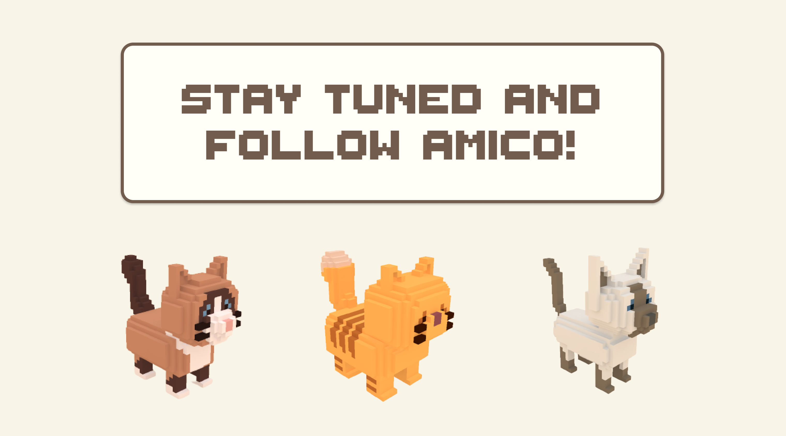

Amico.
Virtual Pet Game for Stress Interventionn.
This project aims to design and generate virtual pets (VPs) based on their personality and appearance traits. To understand how VPs' appearance traits relate to their personality, we followed design guidelines from the Five Factor Model (FFM). We modeled several initial VPs that follow these design guidelines and then used these as datasets to generate more VPs. In this exhibition, we illustrate an AI approach for generating 3D artwork and provide a better understanding of users' perceptions of virtual pets' personalities.

Background
The Metaverse has grown in popularity in recent years, and a lot of work has been done to explore the content in the virtual environment. For example, previous researchers explored the understanding of the player perception of narrative NPC roles in games, by proposing a methodological approach towards the visual design of non-player characters (NPCs) to fit specific narrative roles, because NPCs serve important functions for game narratives and influence player immersion. And the MBTI (Myers-Briggs personality inventory) test has been popular among the public for identifying individuals with personality disorders. We also found that previous researchers have applied machine-learning techniques to appearance generation. The popular personality test and the research on player roles in virtual environments motivated us to investigate the personality and appearance traits of virtual pets and generate them through machine learning algorithms with design guidelines.

Pet Design
To explore how the appearance traits of pets affect people's perceived personality, we designed virtual pet characters based on real pets. We grouped major breeds of cats and dogs into six clusters based on their appearance traits and designed one virtual pet character for each cluster. This approach ensured that designed pet characters are distinctive and characteristic in appearance, as well as involving more types of appearance traits. The designed virtual pets were then evaluated via an online survey and follow-up interview.

User Study
We conducted a user study to identify players’ perceived personalities of pets. The study included an online survey and a follow-up interview. The survey was designed with three goals: 1) compare participants’ perceived personalities of different forms of pets within the same cluster. 2) evaluate how our designed pet attracts people. 3) understand their perception toward keeping real pets and virtual pets. The follow-up interview aimed to further understand the reasons behind participants’ perceptions based on the result of the online survey.

Results
According to the data from 33 participants, the ANOVA test shows that the format of pets (real, virtual, or animation) significantly affected people's perceptions of their personalities, especially for Neuroticism and Agreeableness. And we found that the voxel format looks more consistent with the agreeableness factor, while the real picture of the pet looks more neurotic. We also discovered that people prefer pets with cute appearances but neurotic personalities.

This is an ongoing project, stay tuned for updates!
Team Member
Arianna Agudio: UX/UI Designer
Caterina Cavallini,: Industrial & UX/UI Designer Matteo Garagiola: UX/UI Designer & AI Reseacher Andrea Bonarini: Advisor Margherita Pillan: Advisor Venere Ferraro: Advisor Stefana Maja Broadbent: Advisor
My Keywords
#UX/UI Design
#Javascript
#Data collection